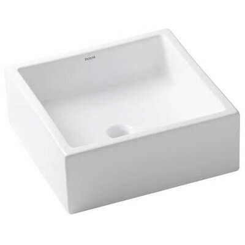

Cuba apoio louça 35x35cm Loft Q5 S/mesa branco - Incepa
Preço: R$394,90/cada
Descrição detalhada
| Produto | Cuba de Apoio |
|---|---|
| Modelo | Cuba apoio Louça |
| Marca | Incepa |
| Formato | Quadrado |
| Material | Louça |
| Cor | Branco |
| Altura | 25,00 cm |
| Largura | 45,00 cm |
| Profundidade | 13,00 cm |
| Comprimento | 45,00 cm |
| Peso | 3,95 kg |
| Acompanha torneira | Não |
| Acompanha válvula | Não |
| Tipo de válvula | Convencional |
| Acompanha mesa para torneira | Não |
| Garantia do fabricante | 3 meses |